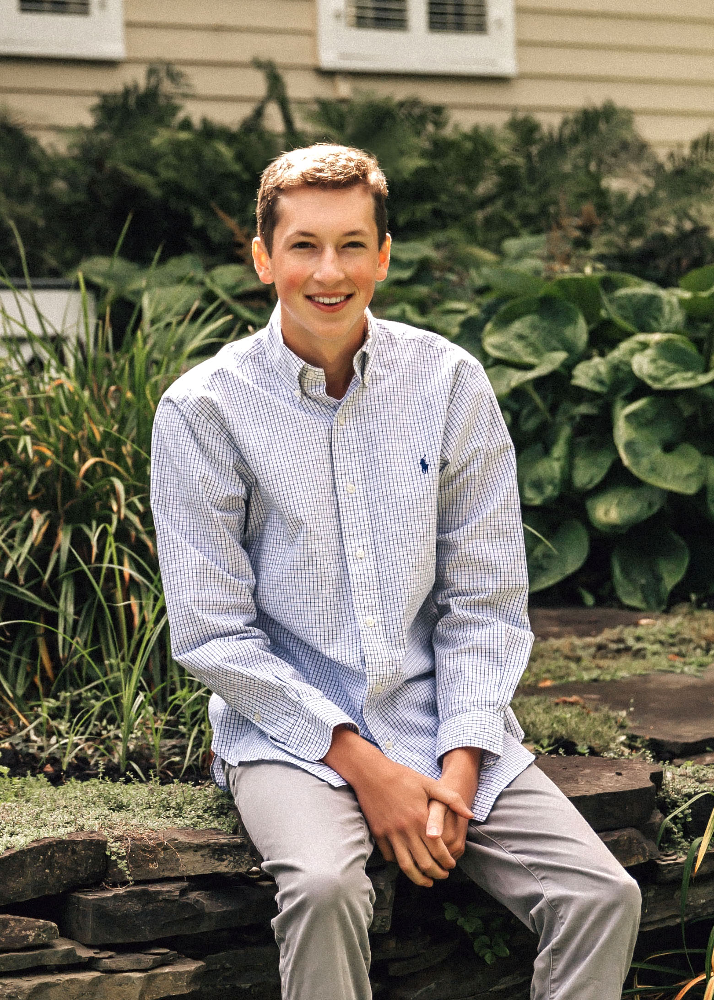

Hi, I am a senior at Cornell University studying Computer Science. Currently, I am interested in software
engineering and robotics. Most recently, I was at the APL at The University of Washington working on localization
algorithms for Autonomous Subsea Vehicles. Previously, I have worked at a manufacturing company building a
database management system for assembly line production.

Blue Anchor
Daniel Lines, Aaron Marburg,
APL UW
Autonomous docking is crucial for subsea systems such as
wireless charging and data transfer for ROVs. The ability to control the ROV without human intervention opens up
new possibilities for underwater operations, from monitoring tidal turbines to surveying telecommunication
cables.
This project aimed to address one aspect of this challenge: achieving autonomous docking for the BlueROV Heavy.

I will TA CS 4670, Computer Vision!
After two great
semesters as a TA for CS 3410, I am happy to annouce that I have accepted a position to TA for my first 4000
level computer science class.